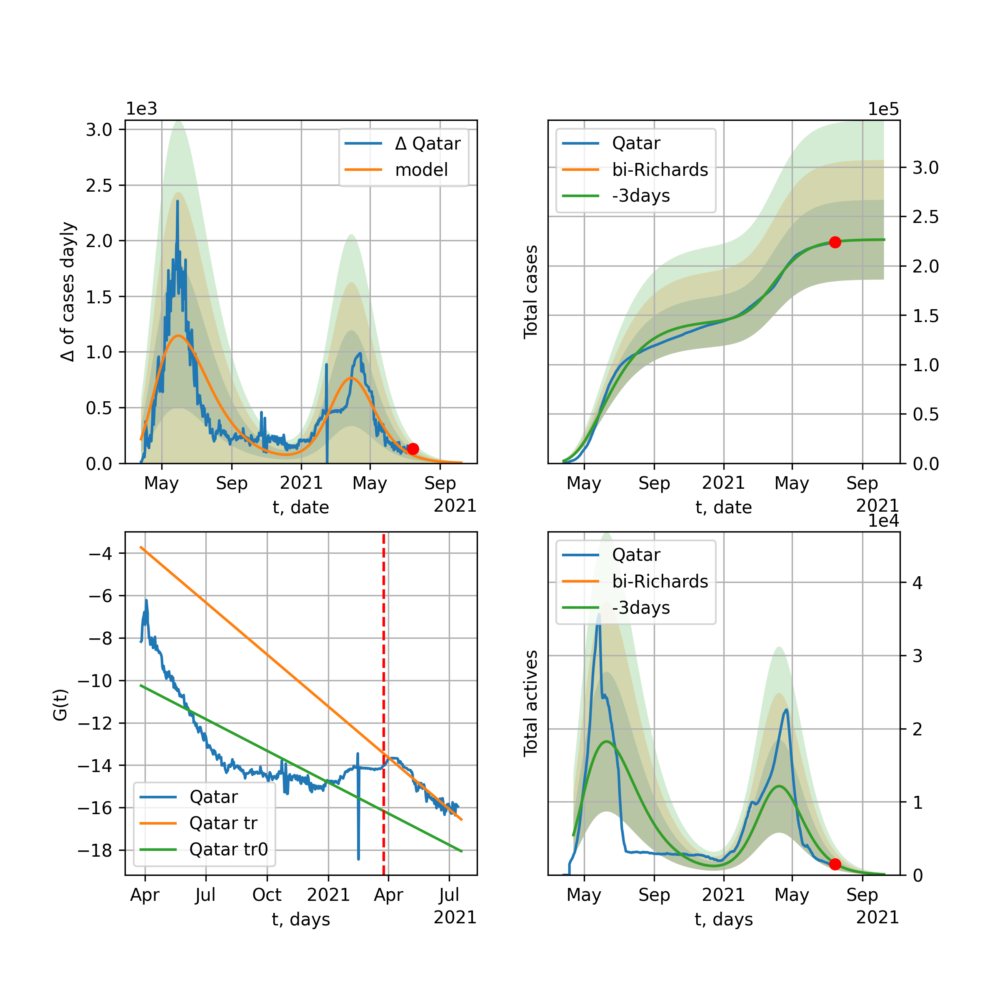

Multi-logistic model of COVID-19 dynamics
Model, code, results
Project maintained by algmaknick Hosted on GitHub Pages — Theme by mattgraham
World

World data at: 2020-07-12
+3 day model MAPE: 0.007824
model: bi-Richards
coeffs: [ 2.56518473e+07 1.03419072e+00 -6.43025157e+01 2.02130873e-02]
rational stdev: 0.076058
forecast at the end of period: +344 days
deltaDaycases: 485
total cases: 30731401 ± 2337366
total death: 1347087 ± 307369
bi-Richards approximation splitting point: 50
trend coefficient of determination: 0.844280
intercept: -2.356710
slope: -0.033745
trend coefficient of determination: 0.359392
intercept: -3.963079
slope: -0.004158
European Union

European Union data at: 2020-07-12
+3 day model MAPE: 0.002384
model: bi-Richards
coeffs: [ 4.02843357e+05 2.25020226e+00 -6.82159383e+01 1.17315120e-02]
rational stdev: 0.543869
forecast at the end of period: +118 days
deltaDaycases: 230
total cases: 1476490 ± 803017
total death: 148936 ± 243005
bi-Richards approximation splitting point: 83
trend coefficient of determination: 0.943878
intercept: -1.137155
slope: -0.057578
trend coefficient of determination: 0.031270
intercept: -5.538785
slope: -0.003687
Brazil

Brazil data at: 2020-07-12
+3 day model MAPE: 0.001875
model: Richards
coeffs: [ 5.52848842e+06 3.67104469e-01 -1.31421676e+01 5.36082525e-02]
rational stdev: 0.352155
forecast at the end of period: +384 days
deltaDaycases: 63
total cases: 5525268 ± 1945751
total death: 213620 ± 225682
trend coefficient of determination: 0.237695
intercept: -2.441571
slope: -0.015095
Russia

Russia data at: 2020-07-12
+3 day model MAPE: 0.008342
model: Richards
coeffs: [ 8.73705415e+05 2.85063782e+00 -7.53557547e+01 1.11851812e-02]
S.Korea scenario coeffs: [0.36242246, 2.56241634, 1.84890887, 0.13324732]
rational stdev: 0.243355
forecast at the end of period: +524 days
deltaDaycases: 418
total cases: 1149352 ± 279700
total death: 17916 ± 13079
trend coefficient of determination: 0.942416
intercept: -1.359559
slope: -0.030126
USA

USA data at: 2020-07-12
+3 day model MAPE: 0.002866
model: bi-Richards
coeffs: [ 1.26213125e+07 7.05736151e-01 -7.32115485e-01 3.11503642e-02]
rational stdev: 0.272652
forecast at the end of period: +328 days
deltaDaycases: 477
total cases: 14715278 ± 4012146
total death: 593879 ± 485766
bi-Richards approximation splitting point: 90
trend coefficient of determination: 0.944868
intercept: -1.521183
slope: -0.043937
trend coefficient of determination: 0.792150
intercept: -6.963885
slope: 0.020928
Spain

Spain data at: 2020-07-10
+3 day model MAPE: 0.004895
model: bi-Richards
coeffs: [ 2.08230642e+04 2.44041467e+00 -6.82262223e+01 1.00688475e-02]
rational stdev: 0.197873
forecast at the end of period: +22 days
deltaDaycases: 162
total cases: 303377 ± 60030
total death: 28628 ± 16994
bi-Richards approximation splitting point: 90
trend coefficient of determination: 0.953843
intercept: -0.737153
slope: -0.060967
trend coefficient of determination: 0.001929
intercept: -6.972343
slope: 0.001330
Italy

Italy data at: 2020-07-12
+3 day model MAPE: 0.001097
model: Richards
coeffs: [ 2.39816281e+05 7.73994338e+00 -5.92230526e+01 7.40807929e-03]
rational stdev: 0.101413
forecast at the end of period: +6 days
deltaDaycases: 23
total cases: 239419 ± 24280
total death: 34430 ± 10474
trend coefficient of determination: 0.959329
intercept: -1.410224
slope: -0.048488
United Kingdom

United Kingdom data at: 2020-07-12
+3 day model MAPE: 0.001649
model: Richards
coeffs: [ 2.93203654e+05 4.24711268e+00 -6.86316474e+01 1.04573355e-02]
S.Korea scenario coeffs: [0.36242246, 2.56241634, 1.84890887, 0.13324732]
rational stdev: 0.161437
forecast at the end of period: +314 days
deltaDaycases: 211
total cases: 384487 ± 62070
total death: 59503 ± 28817
trend coefficient of determination: 0.976351
intercept: -1.492221
slope: -0.042132
France

France data at: 2020-07-10
+3 day model MAPE: 0.004048
model: bi-Richards
coeffs: [ 4.17627378e+04 3.42805001e+00 -3.21745375e+01 1.05440700e-02]
rational stdev: 0.091480
forecast at the end of period: +78 days
deltaDaycases: 30
total cases: 180466 ± 16509
total death: 31710 ± 8702
bi-Richards approximation splitting point: 86
trend coefficient of determination: 0.904055
intercept: -0.837118
slope: -0.068811
trend coefficient of determination: 0.004226
intercept: -6.266665
slope: 0.002784
Germany

Germany data at: 2020-07-12
+3 day model MAPE: 0.000493
model: bi-Richards
coeffs: [ 3.06125861e+04 4.54475451e+00 -3.07840824e+01 8.42474074e-03]
rational stdev: 0.124713
forecast at the end of period: +20 days
deltaDaycases: 178
total cases: 204718 ± 25531
total death: 9351 ± 3498
bi-Richards approximation splitting point: 94
trend coefficient of determination: 0.950724
intercept: -1.443077
slope: -0.061202
trend coefficient of determination: 0.025647
intercept: -5.461029
slope: -0.008240
Turkey

Turkey data at: 2020-07-12
+3 day model MAPE: 0.001601
model: bi-Richards
coeffs: [ 8.63107762e+04 2.21785980e+00 -3.37285716e+00 1.78170637e-02]
rational stdev: 0.188799
forecast at the end of period: +90 days
deltaDaycases: 49
total cases: 246317 ± 46504
total death: 6202 ± 3512
bi-Richards approximation splitting point: 75
trend coefficient of determination: 0.786060
intercept: -1.014534
slope: -0.058893
trend coefficient of determination: 0.031628
intercept: -5.098804
slope: -0.002126
Iran

Iran data at: 2020-07-12
+3 day model MAPE: 0.007133
model: bi-Richards
coeffs: [ 2.15093013e+05 3.36084457e+00 -2.73397498e+01 1.02526647e-02]
rational stdev: 0.252487
forecast at the end of period: +188 days
deltaDaycases: 4
total cases: 317455 ± 80153
total death: 15828 ± 11989
bi-Richards approximation splitting point: 75
trend coefficient of determination: 0.949240
intercept: -0.907424
slope: -0.055025
trend coefficient of determination: 0.575878
intercept: -3.533014
slope: -0.008228
Canada

Canada data at: 2020-07-12
+3 day model MAPE: 0.004404
model: bi-Richards
coeffs: [ 4.20089356e+03 9.80849773e+00 -3.71433173e+01 4.43662419e-03]
rational stdev: 0.191062
forecast at the end of period: +126 days
deltaDaycases: 0
total cases: 110441 ± 21101
total death: 9015 ± 5167
bi-Richards approximation splitting point: 95
trend coefficient of determination: 0.909532
intercept: -1.314484
slope: -0.037922
trend coefficient of determination: 0.383581
intercept: -2.870969
slope: -0.025473
South Africa

South Africa data at: 2020-07-12
+3 day model MAPE: 0.012305
model: bi-Richards
coeffs: [3.25529139e+07 6.82380771e-02 1.69486509e+02 2.47827401e-01]
rational stdev: 0.296077
forecast at the end of period: +412 days
deltaDaycases: 4739
total cases: 32274909 ± 9555856
total death: 476572 ± 423305
bi-Richards approximation splitting point: 30
trend coefficient of determination: 0.627917
intercept: -1.357107
slope: -0.132197
trend coefficient of determination: 0.640975
intercept: -4.509061
slope: -0.012335
Belgium

Belgium data at: 2020-07-12
+3 day model MAPE: 0.044393
model: bi-Richards
coeffs: [5.67433497e+02 1.76766572e-01 4.17284004e+00 1.34377889e-02]
rational stdev: 0.538229
forecast at the end of period: +69 days
deltaDaycases: 0
total cases: 59797 ± 32184
total death: 9328 ± 15061
bi-Richards approximation splitting point: 105
trend coefficient of determination: 0.958625
intercept: -1.317944
slope: -0.055579
trend coefficient of determination: 0.183223
intercept: -19.572729
slope: 0.107601
Peru

Peru data at: 2020-07-12
+3 day model MAPE: 0.012473
model: bi-Richards
coeffs: [ 1.16891902e+05 6.07207061e+00 -8.60343724e+00 8.11756874e-03]
S.Korea scenario coeffs: [0.36242246, 2.56241634, 1.84890887, 0.13324732]
rational stdev: 0.167180
forecast at the end of period: +454 days
deltaDaycases: 31
total cases: 411224 ± 68748
total death: 14958 ± 7502
bi-Richards approximation splitting point: 70
trend coefficient of determination: 0.545889
intercept: -1.444973
slope: -0.026969
trend coefficient of determination: 0.846179
intercept: -1.150087
slope: -0.029416
Netherlands

Netherlands data at: 2020-07-12
+3 day model MAPE: 0.001294
model: bi-Richards
coeffs: [4.83911689e+03 7.34309277e+00 2.58176714e+01 1.07261251e-02]
rational stdev: 0.030714
forecast at the end of period: +6 days
deltaDaycases: 17
total cases: 50947 ± 1564
total death: 6128 ± 564
bi-Richards approximation splitting point: 75
trend coefficient of determination: 0.960465
intercept: -1.294731
slope: -0.062488
trend coefficient of determination: 0.258599
intercept: -1.458548
slope: -0.050632
India

India data at: 2020-07-12
+3 day model MAPE: 0.011047
model: Richards
coeffs: [ 1.70023998e+07 2.52414549e-01 -5.99498415e+01 4.26260082e-02]
rational stdev: 0.378104
forecast at the end of period: +594 days
deltaDaycases: 972
total cases: 16912218 ± 6394574
total death: 446012 ± 505916
trend coefficient of determination: 0.728939
intercept: -1.970177
slope: -0.017684
Switzerland

Switzerland data at: 2020-07-12
+3 day model MAPE: 0.001577
model: bi-Richards
coeffs: [6.98655179e+05 1.07355906e-01 1.30318718e+02 1.33820607e-01]
rational stdev: 0.292609
forecast at the end of period: +524 days
deltaDaycases: 46
total cases: 726127 ± 212471
total death: 43457 ± 38147
bi-Richards approximation splitting point: 96
trend coefficient of determination: 0.953552
intercept: -2.299516
slope: -0.082000
trend coefficient of determination: 0.567584
intercept: -14.505193
slope: 0.059016
Ecuador

Ecuador data at: 2020-07-12
+3 day model MAPE: 0.022646
model: Richards
coeffs: [ 8.51592169e+04 1.43303536e+00 -1.41786648e+02 1.51603642e-02]
S.Korea scenario coeffs: [0.36242246, 2.56241634, 1.84890887, 0.13324732]
rational stdev: 0.179404
forecast at the end of period: +594 days
deltaDaycases: 60
total cases: 105983 ± 19013
total death: 7881 ± 4241
trend coefficient of determination: 0.142725
intercept: -3.017692
slope: -0.025675
Portugal

Portugal data at: 2020-07-12
+3 day model MAPE: 0.004548
model: bi-Richards
coeffs: [ 3.37640075e+04 1.71301530e+00 -5.16419420e+01 1.61671410e-02]
rational stdev: 0.049560
forecast at the end of period: +174 days
deltaDaycases: 4
total cases: 61754 ± 3060
total death: 2203 ± 327
bi-Richards approximation splitting point: 61
trend coefficient of determination: 0.904143
intercept: -1.186349
slope: -0.070160
trend coefficient of determination: 0.002754
intercept: -5.039851
slope: 0.000653
Saudi Arabia

Saudi Arabia data at: 2020-07-12
+3 day model MAPE: 0.007574
model: bi-Richards
coeffs: [1.45855258e+05 1.59143451e-01 8.52569056e+01 4.73214668e-01]
rational stdev: 0.164295
forecast at the end of period: +83 days
deltaDaycases: 18
total cases: 277332 ± 45564
total death: 2654 ± 1308
bi-Richards approximation splitting point: 75
trend coefficient of determination: 0.950460
intercept: -4.701975
slope: -0.060284
trend coefficient of determination: 0.749356
intercept: -6.797264
slope: -0.027228
Sweden

Sweden data at: 2020-07-12
+3 day model MAPE: 0.008288
model: bi-Richards
coeffs: [3.47561166e+04 2.93145927e-01 8.86629185e+01 2.48810759e-01]
rational stdev: 0.229969
forecast at the end of period: +69 days
deltaDaycases: 17
total cases: 85841 ± 19740
total death: 6333 ± 4369
bi-Richards approximation splitting point: 90
trend coefficient of determination: 0.880982
intercept: -2.467583
slope: -0.056060
trend coefficient of determination: 0.151965
intercept: -1.713452
slope: -0.049624
Pakistan

Pakistan data at: 2020-07-12
+3 day model MAPE: 0.013651
model: bi-Richards
coeffs: [2.65336043e+05 5.50775830e-02 1.07643139e+02 1.76118665e+00]
S.Korea scenario coeffs: [0.36242246, 2.56241634, 1.84890887, 0.13324732]
rational stdev: 0.373995
forecast at the end of period: +209 days
deltaDaycases: 135
total cases: 359005 ± 134266
total death: 7513 ± 8429
bi-Richards approximation splitting point: 25
trend coefficient of determination: 0.857951
intercept: -3.509575
slope: -0.396651
trend coefficient of determination: 0.974518
intercept: -13.224693
slope: -0.103220
Ireland

Ireland data at: 2020-07-12
+3 day model MAPE: 0.000756
model: Richards
coeffs: [2.53678229e+04 2.17070243e-01 2.03824447e+01 4.26131065e-01]
rational stdev: 0.153074
forecast at the end of period: +76 days
deltaDaycases: 0
total cases: 25367 ± 3883
total death: 1728 ± 793
trend coefficient of determination: 0.937927
intercept: -3.829295
slope: -0.078843
Mexico

Mexico data at: 2020-07-12
+3 day model MAPE: 0.004938
model: Richards
coeffs: [ 9.79766452e+05 3.33222665e-01 -5.06596135e+01 5.20418480e-02]
S.Korea scenario coeffs: [0.36242246, 2.56241634, 1.84890887, 0.13324732]
rational stdev: 0.215901
forecast at the end of period: +1084 days
deltaDaycases: 139
total cases: 1310432 ± 282923
total death: 153037 ± 99122
trend coefficient of determination: 0.919516
intercept: -2.228334
slope: -0.021743
Singapore

Singapore data at: 2020-07-12
+3 day model MAPE: 0.002817
model: bi-Richards
coeffs: [ 3.93684703e+04 4.60172255e+00 -2.94651124e+01 8.24504922e-03]
rational stdev: 0.253857
forecast at the end of period: +104 days
deltaDaycases: 2
total cases: 48610 ± 12340
total death: 27 ± 20
bi-Richards approximation splitting point: 60
trend coefficient of determination: 0.125499
intercept: -2.319879
slope: -0.021639
trend coefficient of determination: 0.637432
intercept: 0.369064
slope: -0.038459
Chile

Chile data at: 2020-07-12
+3 day model MAPE: 0.007462
model: Richards
coeffs: [3.33484523e+05 6.57978867e-02 5.62601732e+01 1.23288587e+00]
S.Korea scenario coeffs: [0.36242246, 2.56241634, 1.84890887, 0.13324732]
rational stdev: 0.131349
forecast at the end of period: +146 days
deltaDaycases: 486
total cases: 435117 ± 57152
total death: 9639 ± 3798
trend coefficient of determination: 0.984383
intercept: -13.790224
slope: -0.072560
Israel

Israel data at: 2020-07-12
+3 day model MAPE: 0.002357
model: bi-Richards
coeffs: [6.88035160e+05 1.81498724e-01 9.74904829e+01 1.47529754e-01]
rational stdev: 0.120610
forecast at the end of period: +314 days
deltaDaycases: 18
total cases: 704400 ± 84957
total death: 6594 ± 2385
bi-Richards approximation splitting point: 70
trend coefficient of determination: 0.945331
intercept: -1.972268
slope: -0.099245
trend coefficient of determination: 0.717460
intercept: -12.064099
slope: 0.063222
Austria

Austria data at: 2020-07-12
+3 day model MAPE: 0.013334
model: bi-Richards
coeffs: [ 6.60974617e+03 3.03541286e+00 -1.14026967e+02 7.27553523e-03]
rational stdev: 1.146499
forecast at the end of period: +76 days
deltaDaycases: 19
total cases: 21392 ± 24526
total death: 801 ± 2755
bi-Richards approximation splitting point: 83
trend coefficient of determination: 0.868019
intercept: -1.579512
slope: -0.070846
trend coefficient of determination: 0.486810
intercept: -11.319381
slope: 0.049671
Belarus

Belarus data at: 2020-07-12
+3 day model MAPE: 0.004006
model: Richards
coeffs: [ 7.37758914e+04 2.19182436e+00 -7.20760048e+01 1.70863644e-02]
S.Korea scenario coeffs: [0.36242246, 2.56241634, 1.84890887, 0.13324732]
rational stdev: 0.149043
forecast at the end of period: +454 days
deltaDaycases: 22
total cases: 98670 ± 14706
total death: 705 ± 315
trend coefficient of determination: 0.969409
intercept: -1.673650
slope: -0.041088
Japan

Japan data at: 2020-07-12
+3 day model MAPE: 0.028818
model: bi-Richards
coeffs: [5.84250763e+05 5.03994000e-02 2.58454210e+02 2.95337083e+00]
rational stdev: 0.548277
forecast at the end of period: +524 days
deltaDaycases: 0
total cases: 600355 ± 329160
total death: 27418 ± 45097
bi-Richards approximation splitting point: 115
trend coefficient of determination: 0.929934
intercept: -10.152566
slope: -0.228265
trend coefficient of determination: 0.519037
intercept: -37.898215
slope: 0.023777
China

China data at: 2020-07-12
+3 day model MAPE: 0.000474
model: bi-Richards
coeffs: [ 1.51045477e+03 2.23161378e+01 -3.05896140e-01 3.29985950e-03]
rational stdev: 0.093003
forecast at the end of period: +6 days
deltaDaycases: 0
total cases: 83282 ± 7745
total death: 4616 ± 1287
bi-Richards approximation splitting point: 110
trend coefficient of determination: 0.820999
intercept: -1.986429
slope: -0.082691
trend coefficient of determination: 0.097931
intercept: -12.755782
slope: 0.022565
Qatar

Qatar data at: 2020-07-12
+3 day model MAPE: 0.000574
model: Richards
coeffs: [1.11833512e+05 8.59498407e-02 4.79292805e+01 6.58429614e-01]
S.Korea scenario coeffs: [0.36242246, 2.56241634, 1.84890887, 0.13324732]
rational stdev: 0.128756
forecast at the end of period: +328 days
deltaDaycases: 12
total cases: 151714 ± 19534
total death: 215 ± 83
trend coefficient of determination: 0.975645
intercept: -6.894415
slope: -0.057904
Poland

Poland data at: 2020-07-12
+3 day model MAPE: 0.004955
model: bi-Richards
coeffs: [ 2.52543097e+04 2.58211768e+00 -2.04403762e+01 1.48754218e-02]
rational stdev: 0.108636
forecast at the end of period: +104 days
deltaDaycases: 5
total cases: 43964 ± 4776
total death: 1822 ± 593
bi-Richards approximation splitting point: 60
trend coefficient of determination: 0.715746
intercept: -1.175924
slope: -0.047839
trend coefficient of determination: 0.721419
intercept: -2.811030
slope: -0.017525
UAE

UAE data at: 2020-07-12
+3 day model MAPE: 0.016641
model: bi-Richards
coeffs: [ 2.86692692e+04 5.84010138e+00 -5.36311006e+01 7.32472779e-03]
rational stdev: 0.050565
forecast at the end of period: +104 days
deltaDaycases: 3
total cases: 58814 ± 2973
total death: 357 ± 54
bi-Richards approximation splitting point: 80
trend coefficient of determination: 0.913832
intercept: -1.944345
slope: -0.032575
trend coefficient of determination: 0.041296
intercept: -5.150826
slope: 0.004002
Romania

Romania data at: 2020-07-12
+3 day model MAPE: 0.012244
model: bi-Richards
coeffs: [4.22705238e+04 1.04854869e+00 1.81928762e+01 2.98625955e-02]
rational stdev: 0.145710
forecast at the end of period: +118 days
deltaDaycases: 43
total cases: 62188 ± 9061
total death: 3601 ± 1574
bi-Richards approximation splitting point: 87
trend coefficient of determination: 0.927947
intercept: -1.375482
slope: -0.046058
trend coefficient of determination: 0.422011
intercept: -6.567780
slope: 0.016985
Panama

Panama data at: 2020-07-12
+3 day model MAPE: 0.011496
model: bi-Richards
coeffs: [ 7.37076689e+04 1.89358857e+00 -4.43378929e+00 1.83045884e-02]
rational stdev: 0.205626
forecast at the end of period: +104 days
deltaDaycases: 58
total cases: 85524 ± 17586
total death: 1703 ± 1050
bi-Richards approximation splitting point: 70
trend coefficient of determination: 0.874498
intercept: -1.302008
slope: -0.048573
trend coefficient of determination: 0.009672
intercept: -3.945881
slope: 0.001613
Ukraine

Ukraine data at: 2020-07-12
+3 day model MAPE: 0.000003
model: bi-Richards
coeffs: [4.30235807e+04 2.15732340e-01 7.64864979e+01 2.74305215e-01]
rational stdev: 0.155104
forecast at the end of period: +104 days
deltaDaycases: 2
total cases: 70292 ± 10902
total death: 1816 ± 845
bi-Richards approximation splitting point: 65
trend coefficient of determination: 0.822451
intercept: -2.502216
slope: -0.068761
trend coefficient of determination: 0.228081
intercept: -6.120942
slope: -0.007648
Indonesia

Indonesia data at: 2020-07-12
+3 day model MAPE: 0.021620
model: bi-Richards
coeffs: [ 2.09316300e+05 1.30637909e+00 -3.95761963e+01 1.77343878e-02]
rational stdev: 0.143653
forecast at the end of period: +202 days
deltaDaycases: 78
total cases: 253068 ± 36354
total death: 12055 ± 5195
bi-Richards approximation splitting point: 75
trend coefficient of determination: 0.798699
intercept: -1.999610
slope: -0.028936
trend coefficient of determination: 0.012684
intercept: -3.697983
slope: -0.002180
Bangladesh

Bangladesh data at: 2020-07-12
+3 day model MAPE: 0.005782
model: bi-Richards
coeffs: [3.09645063e+05 8.85150522e-02 8.23554804e+01 4.40816266e-01]
S.Korea scenario coeffs: [0.36242246, 2.56241634, 1.84890887, 0.13324732]
rational stdev: 0.414566
forecast at the end of period: +762 days
deltaDaycases: 1
total cases: 421865 ± 174891
total death: 5398 ± 6713
bi-Richards approximation splitting point: 29
trend coefficient of determination: 0.000228
intercept: -4.781993
slope: -0.004061
trend coefficient of determination: 0.913627
intercept: -3.501151
slope: -0.050004
South_Korea

South Korea data at: 2020-07-12
+3 day model MAPE: 0.000068
model: bi-Richards
coeffs: [ 7.88879777e+03 1.81940118e+00 -1.32002759e+02 9.55470839e-03]
rational stdev: 0.148239
forecast at the end of period: +104 days
deltaDaycases: 18
total cases: 17174 ± 2545
total death: 368 ± 163
bi-Richards approximation splitting point: 73
trend coefficient of determination: 0.865818
intercept: -1.347323
slope: -0.089521
trend coefficient of determination: 0.412752
intercept: -8.304935
slope: 0.020764
Moldova

Moldova data at: 2020-07-12
+3 day model MAPE: 0.008888
model: bi-Richards
coeffs: [1.55563950e+04 1.03206592e-01 9.09812714e+01 6.95849151e-01]
rational stdev: 0.170036
forecast at the end of period: +62 days
deltaDaycases: 2
total cases: 21825 ± 3711
total death: 722 ± 368
bi-Richards approximation splitting point: 60
trend coefficient of determination: 0.916637
intercept: -3.074340
slope: -0.123707
trend coefficient of determination: 0.616693
intercept: -7.890821
slope: -0.026438
Denmark

Denmark data at: 2020-07-10
+3 day model MAPE: 0.000612
model: bi-Richards
coeffs: [7.87966915e+02 1.65265707e-01 1.00386314e+02 8.20729894e-01]
rational stdev: 0.242728
forecast at the end of period: +57 days
deltaDaycases: 0
total cases: 13050 ± 3167
total death: 613 ± 446
bi-Richards approximation splitting point: 100
trend coefficient of determination: 0.866594
intercept: -6.303670
slope: -0.085944
trend coefficient of determination: 0.046610
intercept: -8.709755
slope: -0.052551
Serbia

Serbia data at: 2020-07-12
+3 day model MAPE: 0.024702
model: bi-Richards
coeffs: [1.17265802e+04 1.11806939e-01 1.03995908e+02 1.05481993e+00]
rational stdev: 0.265778
forecast at the end of period: +230 days
deltaDaycases: 0
total cases: 23389 ± 6216
total death: 500 ± 398
bi-Richards approximation splitting point: 90
trend coefficient of determination: 0.847058
intercept: -8.977429
slope: -0.089810
trend coefficient of determination: 0.368617
intercept: -17.144327
slope: 0.027309
Kuwait

Kuwait data at: 2020-07-12
+3 day model MAPE: 0.016017
model: bi-Richards
coeffs: [ 4.39939448e+04 5.29276180e+00 -1.21067211e+01 8.66323027e-03]
S.Korea scenario coeffs: [0.36242246, 2.56241634, 1.84890887, 0.13324732]
rational stdev: 0.095618
forecast at the end of period: +363 days
deltaDaycases: 61
total cases: 77744 ± 7433
total death: 552 ± 158
bi-Richards approximation splitting point: 90
trend coefficient of determination: 0.166050
intercept: -2.530379
slope: -0.009691
trend coefficient of determination: 0.078970
intercept: -3.713836
slope: -0.005511
Philippines

Philippines data at: 2020-07-12
+3 day model MAPE: 0.022033
model: bi-Richards
coeffs: [ 6.33153772e+05 6.37095166e-01 -9.73071174e+01 2.10558956e-02]
rational stdev: 0.177020
forecast at the end of period: +384 days
deltaDaycases: 134
total cases: 634642 ± 112344
total death: 17304 ± 9189
bi-Richards approximation splitting point: 60
trend coefficient of determination: 0.660042
intercept: -1.536976
slope: -0.049519
trend coefficient of determination: 0.039834
intercept: -4.346332
slope: 0.004300
Norway

Norway data at: 2020-07-12
+3 day model MAPE: 0.000286
model: bi-Richards
coeffs: [6.99253075e+02 5.21523195e+00 2.12897001e+01 1.06569454e-02]
rational stdev: 0.154904
forecast at the end of period: +6 days
deltaDaycases: 5
total cases: 9027 ± 1398
total death: 253 ± 117
bi-Richards approximation splitting point: 105
trend coefficient of determination: 0.918518
intercept: -1.139460
slope: -0.061738
trend coefficient of determination: 0.072565
intercept: -3.913733
slope: -0.025509
Czechia

Czechia data at: 2020-07-12
+3 day model MAPE: 0.007252
model: bi-Richards
coeffs: [ 4.20228724e+04 6.80138548e-01 -1.08984593e+02 1.99258683e-02]
rational stdev: 0.645527
forecast at the end of period: +384 days
deltaDaycases: 6
total cases: 49528 ± 31972
total death: 1323 ± 2562
bi-Richards approximation splitting point: 61
trend coefficient of determination: 0.431605
intercept: -1.498855
slope: -0.055594
trend coefficient of determination: 0.126830
intercept: -6.084051
slope: 0.008815
Colombia

Colombia data at: 2020-07-12
+3 day model MAPE: 0.012241
model: bi-Richards
coeffs: [ 2.00361142e+06 3.26337416e-01 -4.27819574e+01 4.15838421e-02]
S.Korea scenario coeffs: [0.36242246, 2.56241634, 1.84890887, 0.13324732]
rational stdev: 0.192921
forecast at the end of period: +1294 days
deltaDaycases: 510
total cases: 2614470 ± 504387
total death: 92226 ± 53377
bi-Richards approximation splitting point: 41
trend coefficient of determination: 0.764783
intercept: -1.122098
slope: -0.065956
trend coefficient of determination: 0.485246
intercept: -3.059694
slope: -0.006563
Australia

Australia data at: 2020-07-12
+3 day model MAPE: 0.077857
model: bi-Richards
coeffs: [ 4.39121858e+04 4.12878812e-01 -4.84888335e+02 1.33912294e-02]
rational stdev: 0.197130
forecast at the end of period: +629 days
deltaDaycases: 18
total cases: 45994 ± 9066
total death: 497 ± 293
bi-Richards approximation splitting point: 45
trend coefficient of determination: 0.838193
intercept: -0.958816
slope: -0.100238
trend coefficient of determination: 0.337481
intercept: -8.256010
slope: 0.025525
Malaysia

Malaysia data at: 2020-07-12
+3 day model MAPE: 0.001049
model: bi-Richards
coeffs: [2.12074613e+03 1.37047904e-01 8.09810450e+01 9.16179702e-01]
S.Korea scenario coeffs: [0.36242246, 2.56241634, 1.84890887, 0.13324732]
rational stdev: 0.131236
forecast at the end of period: +6 days
deltaDaycases: 0
total cases: 8674 ± 1138
total death: 121 ± 47
bi-Richards approximation splitting point: 70
trend coefficient of determination: 0.794025
intercept: -5.400757
slope: -0.126339
trend coefficient of determination: 0.570681
intercept: -8.804579
slope: -0.054321
Dominican Republic

Dominican Republic data at: 2020-07-12
+3 day model MAPE: 0.010947
model: bi-Richards
coeffs: [1.90117996e+05 5.03441791e-01 9.39044023e+00 4.61958045e-02]
rational stdev: 0.100334
forecast at the end of period: +174 days
deltaDaycases: 180
total cases: 211550 ± 21225
total death: 4261 ± 1282
bi-Richards approximation splitting point: 80
trend coefficient of determination: 0.744490
intercept: -2.436163
slope: -0.029813
trend coefficient of determination: 0.022209
intercept: -4.738142
slope: 0.004907
Egypt

Egypt data at: 2020-07-12
+3 day model MAPE: 0.001469
model: Richards
coeffs: [9.55714812e+04 5.39472516e-02 9.26823790e+01 1.38227950e+00]
rational stdev: 0.226223
forecast at the end of period: +69 days
deltaDaycases: 7
total cases: 95476 ± 21598
total death: 4488 ± 3045
trend coefficient of determination: 0.961251
intercept: -10.263454
slope: -0.087814
Finland

Finland data at: 2020-07-12
+3 day model MAPE: 0.000327
model: bi-Richards
coeffs: [-2.98754162e+02 1.00056605e+01 8.44744169e+00 6.97882799e-03]
rational stdev: 0.130899
forecast at the end of period: +20 days
deltaDaycases: 1
total cases: 7340 ± 960
total death: 331 ± 129
bi-Richards approximation splitting point: 86
trend coefficient of determination: 0.875078
intercept: -1.474685
slope: -0.048644
trend coefficient of determination: 0.105968
intercept: -3.856009
slope: -0.030003
Morocco

Morocco data at: 2020-07-12
+3 day model MAPE: 0.010922
model: bi-Richards
coeffs: [8.12124317e+03 8.58557792e+00 5.37800499e+01 1.17951747e-02]
rational stdev: 0.062519
forecast at the end of period: +48 days
deltaDaycases: 2
total cases: 17700 ± 1106
total death: 281 ± 52
bi-Richards approximation splitting point: 75
trend coefficient of determination: 0.861139
intercept: -1.454849
slope: -0.047838
trend coefficient of determination: 0.270444
intercept: -7.260812
slope: 0.028738
Argentina

Argentina data at: 2020-07-12
+3 day model MAPE: 0.004444
model: bi-Richards
coeffs: [8.14606107e+05 1.05172666e-01 9.06698045e+01 1.98088566e-01]
rational stdev: 0.175105
forecast at the end of period: +454 days
deltaDaycases: 3
total cases: 817059 ± 143071
total death: 15049 ± 7905
bi-Richards approximation splitting point: 38
trend coefficient of determination: 0.163282
intercept: -1.978743
slope: -0.095160
trend coefficient of determination: 0.379495
intercept: -4.544849
slope: -0.006911
Algeria

Algeria data at: 2020-07-12
+3 day model MAPE: 0.022732
model: bi-Richards
coeffs: [6.57195209e+03 1.99330301e+01 7.43559719e+01 8.14740973e-03]
rational stdev: 0.176839
forecast at the end of period: +62 days
deltaDaycases: 23
total cases: 24258 ± 4289
total death: 1277 ± 677
bi-Richards approximation splitting point: 75
trend coefficient of determination: 0.668790
intercept: -2.120539
slope: -0.027561
trend coefficient of determination: 0.749165
intercept: -6.987256
slope: 0.028499
Luxembourg

Luxembourg data at: 2020-07-12
+3 day model MAPE: 0.011713
model: bi-Richards
coeffs: [1283.47833032 4.33811202 125.7023566 -5.90416111]
rational stdev: 0.411230
forecast at the end of period: +104 days
/> deltaDaycases: 0
total cases: 9827 ± 1405
total death: 221 ± 94
bi-Richards approximation splitting point: 75
trend coefficient of determination: 0.622732
intercept: -41.475419
slope: -0.528513
trend coefficient of determination: 0.476783
intercept: -75.246712
slope: 0.044074
Thailand

Thailand data at: 2020-07-12
+3 day model MAPE: 0.001816
model: bi-Richards
coeffs: [ 2.56352934e+02 8.25721032e+00 -6.47001715e+01 4.85527884e-03]
rational stdev: 0.067340
forecast at the end of period: +20 days
deltaDaycases: 0
total cases: 3230 ± 217
total death: 58 ± 11
bi-Richards approximation splitting point: 60
trend coefficient of determination: 0.843127
intercept: -1.229367
slope: -0.117467
trend coefficient of determination: 0.003463
intercept: -8.055460
slope: 0.005194
Hungary

Hungary data at: 2020-07-12
+3 day model MAPE: 0.020368
model: bi-Richards
coeffs: [1.52494773e+04 1.15021699e-01 1.58934878e+02 3.15534329e-01]
rational stdev: 0.403909
forecast at the end of period: +244 days
deltaDaycases: 1
total cases: 19412 ± 7840
total death: 2727 ± 3304
bi-Richards approximation splitting point: 110
trend coefficient of determination: 0.939707
intercept: -2.525752
slope: -0.066783
trend coefficient of determination: 0.113520
intercept: -15.863755
slope: 0.055168
Greece

Greece data at: 2020-07-12
+3 day model MAPE: 0.019990
model: bi-Richards
coeffs: [ 2.52033151e+03 2.07207279e+00 -2.14090343e+01 1.37509103e-02]
rational stdev: 0.123265
forecast at the end of period: +76 days
deltaDaycases: 8
total cases: 5117 ± 630
total death: 259 ± 95
bi-Richards approximation splitting point: 92
trend coefficient of determination: 0.844016
intercept: -1.236630
slope: -0.064323
trend coefficient of determination: 0.220628
intercept: -9.252213
slope: 0.033859
Iraq

Iraq data at: 2020-07-12
+3 day model MAPE: 0.016135
model: bi-Richards
coeffs: [1.78409893e+05 4.59376741e-01 2.28982916e+01 8.09401687e-02]
rational stdev: 0.059617
forecast at the end of period: +146 days
deltaDaycases: 26
total cases: 180751 ± 10775
total death: 7346 ± 1313
bi-Richards approximation splitting point: 60
trend coefficient of determination: 0.000076
intercept: -4.057646
slope: -0.000266
trend coefficient of determination: 0.874978
intercept: -1.295748
slope: -0.030721
Croatia

Croatia data at: 2020-07-12
+3 day model MAPE: 0.043931
model: bi-Richards
coeffs: [2.66689538e+03 3.69029150e+00 5.56742150e+01 2.22385406e-02]
rational stdev: 0.044502
forecast at the end of period: +55 days
deltaDaycases: 1
total cases: 4888 ± 217
total death: 156 ± 20
bi-Richards approximation splitting point: 80
trend coefficient of determination: 0.903399
intercept: -1.179327
slope: -0.105658
trend coefficient of determination: 0.729446
intercept: -23.547277
slope: 0.183958
Iceland

Iceland data at: 2020-07-12
+3 day model MAPE: 0.000577
model: bi-Richards
coeffs: [2.48150314e+02 3.36575526e+00 4.15904115e+01 1.51129514e-02]
rational stdev: 0.073231
forecast at the end of period: +76 days
deltaDaycases: 0
total cases: 2050 ± 150
total death: 10 ± 2
bi-Richards approximation splitting point: 63
trend coefficient of determination: 0.826585
intercept: -0.381850
slope: -0.125727
trend coefficient of determination: 0.621299
intercept: -14.614743
slope: 0.064399
Estonia

Estonia data at: 2020-07-10
+3 day model MAPE: 0.002476
model: bi-Richards
coeffs: [2.46655322e+02 1.02688449e-01 7.58310271e+01 1.57561988e+00]
rational stdev: 0.092918
forecast at the end of period: +8 days
deltaDaycases: 0
total cases: 1996 ± 185
total death: 68 ± 18
bi-Richards approximation splitting point: 50
trend coefficient of determination: 0.880523
intercept: -10.082572
slope: -0.157797
trend coefficient of determination: 0.317738
intercept: -15.367360
slope: -0.037012
Bulgaria

Bulgaria data at: 2020-07-12
+3 day model MAPE: 0.048047
model: bi-Richards
coeffs: [1.15834694e+04 3.88539525e+00 1.45343684e+01 1.16298861e-02]
rational stdev: 0.103367
forecast at the end of period: +76 days
deltaDaycases: 18
total cases: 14651 ± 1514
total death: 541 ± 167
bi-Richards approximation splitting point: 71
trend coefficient of determination: 0.674018
intercept: -2.046562
slope: -0.038862
trend coefficient of determination: 0.420741
intercept: -7.329393
slope: 0.034096
New Zealand

New Zealand data at: 2020-07-12
+3 day model MAPE: 0.000854
model: Richards
coeffs: [ 1.49158630e+03 5.64402224e-01 -5.41494471e-01 3.30453174e-01]
rational stdev: 0.042486
forecast at the end of period: +6 days
deltaDaycases: 0
total cases: 1491 ± 63
total death: 21 ± 2
trend coefficient of determination: 0.916494
intercept: -2.603090
slope: -0.147473
Slovenia

Slovenia data at: 2020-07-12
+3 day model MAPE: 0.003546
model: bi-Richards
coeffs: [6.89125111e+02 3.02941955e-01 1.06824499e+02 3.31047861e-01]
rational stdev: 0.165873
forecast at the end of period: +104 days
deltaDaycases: 0
total cases: 2181 ± 361
total death: 131 ± 65
bi-Richards approximation splitting point: 70
trend coefficient of determination: 0.916180
intercept: -2.384786
slope: -0.106389
trend coefficient of determination: 0.695132
intercept: -17.516489
slope: 0.085005
Slovakia

Slovakia data at: 2020-07-12
+3 day model MAPE: 0.011738
model: bi-Richards
coeffs: [1.34092168e+04 1.69278957e-01 9.86163794e+01 1.45182221e-01]
rational stdev: 0.194306
forecast at the end of period: +370 days
deltaDaycases: 0
total cases: 14908 ± 2896
total death: 219 ± 127
bi-Richards approximation splitting point: 85
trend coefficient of determination: 0.862488
intercept: -1.486282
slope: -0.090009
trend coefficient of determination: 0.316468
intercept: -14.951736
slope: 0.075372
Lithuania

Lithuania data at: 2020-07-11
+3 day model MAPE: 0.002292
model: bi-Richards
coeffs: [ 4.43135541e+02 3.92720113e+00 -3.15514401e+01 1.19483788e-02]
rational stdev: 0.133843
forecast at the end of period: +20 days
deltaDaycases: 0
total cases: 1879 ± 251
total death: 79 ± 31
bi-Richards approximation splitting point: 48
trend coefficient of determination: 0.872394
intercept: -0.895194
slope: -0.088822
trend coefficient of determination: 0.366389
intercept: -4.022881
slope: -0.021953
Latvia

Latvia data at: 2020-07-12
+3 day model MAPE: 0.018089
model: bi-Richards
coeffs: [ 1.00718414e+02 1.90192118e+00 -2.78523971e+01 1.89235912e-02]
rational stdev: 0.090717
forecast at the end of period: +69 days
deltaDaycases: 0
total cases: 1180 ± 107
total death: 30 ± 8
bi-Richards approximation splitting point: 85
trend coefficient of determination: 0.758597
intercept: -2.182061
slope: -0.058329
trend coefficient of determination: 0.109909
intercept: -12.766947
slope: 0.055368
Cyprus

Cyprus data at: 2020-07-12
+3 day model MAPE: 0.003095
model: bi-Richards
coeffs: [ 1.05300859e+02 9.47870121e+00 -1.50251640e+01 6.16134779e-03]
rational stdev: 0.103721
forecast at the end of period: +6 days
deltaDaycases: 0
total cases: 1010 ± 104
total death: 18 ± 5
bi-Richards approximation splitting point: 70
trend coefficient of determination: 0.728090
intercept: -1.360747
slope: -0.075040
trend coefficient of determination: 0.021422
intercept: -5.731367
slope: -0.011478
Malta

Malta data at: 2020-07-09
+3 day model MAPE: 0.001489
model: bi-Richards
coeffs: [2.09978534e+02 1.22034068e+01 1.97827481e+00 6.99535067e-03]
rational stdev: 0.182311
forecast at the end of period: +9 days
deltaDaycases: 0
total cases: 669 ± 122
total death: 8 ± 4
bi-Richards approximation splitting point: 50
trend coefficient of determination: 0.728733
intercept: -0.938204
slope: -0.094384
trend coefficient of determination: 0.478961
intercept: -1.842578
slope: -0.050028
Sri Lanka

Sri Lanka data at: 2020-07-12
+3 day model MAPE: 0.058809
model: bi-Richards
coeffs: [-1.66854601e+03 4.58084744e+00 4.11977571e+01 2.00410216e-02]
rational stdev: 0.096797
forecast at the end of period: +454 days
deltaDaycases: 0
total cases: 13016 ± 1259
total death: 54 ± 15
bi-Richards approximation splitting point: 88
trend coefficient of determination: 0.087867
intercept: -3.362667
slope: -0.016417
trend coefficient of determination: 0.212971
intercept: -16.868875
slope: 0.109177
References
- Worldometers COVID-19 Coronavirus Pandemic
- Su COVID-19 susijusi gyventojų ir verslo statistika
- Bi-logistic growth
- Least squares
- scikit-learn
- scipy.org
- European Centre for Disease Prevention and Control An agency of the European Union
- Aaron Miller, Mac Josh Reandelar, Kimberly Fasciglione, Violeta Roumenova, Yan Li, Gonzalo H Otazu, Correlation between universal BCG vaccination policy and reduced morbidity and mortality for COVID-19: an epidemiological study, https://doi.org/10.1101/2020.03.24.20042937
- c19.se